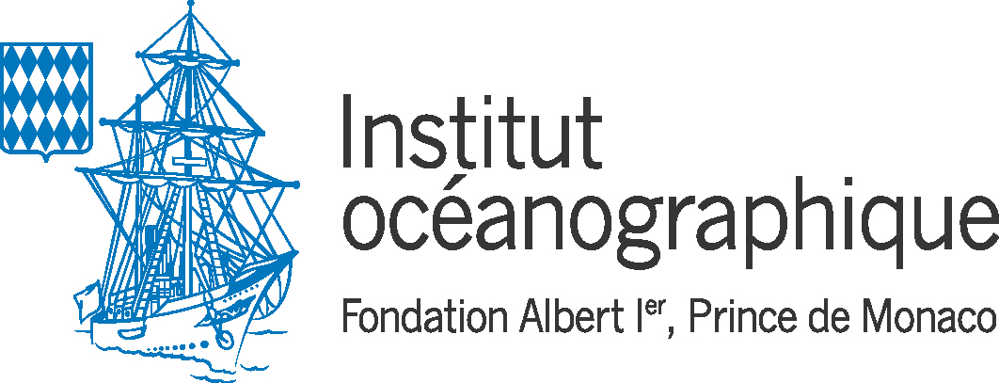
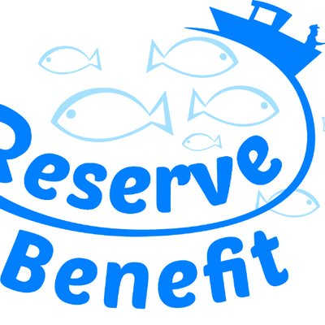

Curriculum Vitae
October 21th, 2021. Pierre-Edouard GUERIN
Bio-informaticien
FLORIMOND DESPREZ GROUP
Coordonnées
- Courriel: pierre.edouard.guerin [at] gmail.com
- Téléphone: (+33) 04 67 61 32 35
Experience
Responsable en Bio-informatique
FLORIMOND DESPREZ UR Laboratoire de Génétique et Biométrie, Cappelle-en-Pevele
J'apporte mes compétences en programmation et bio-informatique sur les projets de recherche scientifique du groupe en collaboration avec les sélectionneurs et les partenaires internationaux.
python R C++ rust Singularity Docker SLURM Nextflow Jupyter notebookBio-informaticien ingénieur d’étude
CNRS UMR 5175, Centre d'Ecologie Fonctionnelle et Evolutive, Montpellier
Développement de logiciels et réalisation de chaînes de traitement de données en calcul intensif pour l’analyse et la visualisation de données massives issues du séquençage ADN haut-débit (génomique, ADN environnemental). J’assure également la veille technologique pour mettre en place de nouvelles méthodes de traitement des données et optimiser la reproductibilité scientifique.
python R C++ Singularity Docker SGE SLURM Snakemake Nextflow Jupyter notebookBio-informaticien stagiaire
INSERM UMR S598, Génétique des Diabètes, Paris
Développement de nouvelles fonctionnalités pour un logiciel dédié au diagnostic médical automatisé en exploitant les données de variants génétiques rares détectés sur les séquences de génomes humains.
python Qt mySQL DockerBio-informaticien stagiaire
INSERM UMR S1134, Dynamique des Structures et Interactions des Macromolécules en Biologie, Paris
Conception et développement d'un nouvel algorithme pour améliorer la prédiction de modélisation 3D des structures des protéines à résolution atomique.
C C++ postgreSQL HTML CSS JavascriptFormation
- 2016: Master Bioinformatique, Biologie, Informatique, Université Paris Diderot, France
- 2014: Licence Bioinformatique, Biologie, Informatique, Université Paris Diderot, France
Projets
Recherche & Innovation Groupe FLORIMOND DESPREZ
Mes projets au services du groupe sont confidentiels. Merci de me contacter pour plus d'informations.
Recherche publique






Logiciels
Recherche & Innovation Groupe FLORIMOND DESPREZ
- Les logiciels et services que je tiens pour le groupe sont confidentiels. Merci de me contacter pour de plus amples informations.
Recherche publique
- WFGD (contributeur principal) : carte interactive de la diversité génétique des poissons dans le monde.
- ANVAGE (contributeur principal): ANnotation Variants GEnome est une boîte à outil programmée en python qui permet de réaliser certaines analyses de routine tel que l'annotation de variants à partir d'un fichier d'annotation ou la detection de mutations non-conservative sur des genes d'interêt.
- Rgeogendiv (contributeur principal) : package R pour télécharger, préparer et aligner des séquences ADN géoréférencés sur Genbank afin de calculer la diversité génétique à différentes échelles géographiques.
- Workflow analyse metabarcoding ADN environnemental (contributeur principal): mon workflow a analysé les donnnées de Metabarcoding dans le cadre de la mission d'exploration marine de Monaco en collaboration avec l'IFREMER, le CNRS, l'ETH Zurich et la compagnie SPYGEN.
- Workflow génotypage génomes réduits RAD-seq (contributeur principal) : mon workflow a analysé plus de 3000 génomes de poissons parmis 4 espèces pour le projet européen RESERVEBENEFIT en collaboration avec le Helmholtz-Zentrum für Ozeanforschung Kiel et Instituto Español de Oceanografía.
- Genbar2 (contributeur principal) : suite du logiciel Genbar1 développé dans les années 90 qui permettait à l’origine d’assigner des populations génétiques à partir de données microsatellites. La version 2 que j’ai developpé en C++ peut analyser les données de séquençage nouvelle génération grâce à la librairie htslib.
- ExAM (contributeur) : logiciel en python avec une interface graphique qui analyse automatiqument les séquençages d’exon pour annoter les variants. Le logiciel était utilisé par les médecins de notre laboratoire pour accélérer leurs analyses génétiques.
- ORION (contributeur) : outil interactif pour la prédiction des structures de protéines à partir des séquences amino-acides (réalisé 4 ans avant Alphafold qui a depuis révolutionné ce domaine).
Publications scientifiques
Use of environmental DNA in assessment of fish functional and phylogenetic diversity
Virginie Marques, Paul Castagne, Andréa Polanco Fernandez, Giomar Helena Borrero-Perez, Regis Hocde, Pierre-Edouard Guerin, Jean-Baptiste Juhel, Laure Velez, Nicolas Loiseau, Tom Bech Letessier, Sandra Bessudo, Alice Valentini, Tony Dejean, David Mouillot, Loïc Pellissier, Sébastien Villéger
Conservation Biology. 2021 July 18. DOI: 10.1111/cobi.13802
Restricted dispersal in a sea of gene flow
Laura Benestan, Nicolas Loiseau, Pierre-Edouard Guerin, Katarina Fietz, Elena Trofimenko, Siren Rühs, Willi Rath, Arne Biastoch, Angel Perez-Ruzafa, Pilar Baixauli, Aitor Forcada, Philippe Lenfant, Sandra Mallol, Rachel Goni, Laure Velez, Marc Höppner, Stuart Kininmonth, David Mouillot, Oscar Puebla, Stephanie Manel
Proceedings of the Royal Society B. 2021 May 18. DOI: 10.1098/rspb.2021.0458
Benchmarking bioinformatic tools for fast and accurate eDNA metabarcoding species identification
Laetitia Mathon, Alice Valentini, Pierre-Edouard Guerin, Eric Normandeau, Cyril Noel, Clément Lionnet, Emilie Boulanger, Wilfried Thuiller, Louis Bernatchez, David Mouillot, Tony Dejean, Stephanie Manel
Molecular Ecology Resources. 2021 May 17. DOI: 10.1111/1755-0998.13430
Blind assessment of vertebrate taxonomic diversity across spatial scales by clustering environmental DNA metabarcoding sequences
Virginie Marques, Pierre‐Edouard Guerin, Mathieu Rocle, Alice Valentini, Stephanie Manel, David Mouillot, Tony Dejean
Ecography. 2020 Aug 04. DOI: 10.1111/ecog.05049
New genomic ressources for three exploited Mediterranean fishes
Katharina Fietz, Elena Trofimenko, Pierre-Edouard Guerin, Veronique Arnal, Montserrat Torres-Oliva, Stephane Lobreaux,Angel Perez-Ruzafa, Stephanie Manel, Oscar Puebla
Genomics. 2020 July 03. DOI: 10.1016/j.ygeno.2020.06.041
Global determinants of freshwater and marine fish genetic diversity
Stephanie Manel, Pierre-Edouard Guerin, David Mouillot, Simon Blanchet, Laure Velez, Camille Albouy & Loic Pellissier
Nature communications. 2020 Feb 10. DOI: 10.1038/s41467-020-14409-7
Predicting genotype environmental range from genome–environment associations
Stephanie Manel, Marco Andrello, Karine Henry, Daphne Verdelet, Aude Darracq, Pierre‐Edouard Guerin, Bruno Desprez, Pierre Devaux
Molecular Ecology. 2018 May 17. DOI: 10.1111/mec.14723
ORION : a web server for protein fold recognition and structure prediction using evolutionary hybrid profiles
Yassine Ghouzam, Guillaume Postic, Pierre-Edouard Guerin, Alexandre G. de Brevern & Jean-Christophe Gelly
Scientific Reports. 2016 Jun 20. DOI: 10.1038/srep28268
Autres activités
Sciences
- Mon blog scientifique
- Membre de l'association des JEunes BIoinformaticiens de France Jebif
- Auteur d'articles de vulgarisation scientifique pour la communauté bioinfo-fr
- Machine learning en exploitant les technologies basées sur python (pandas, numpy, tensorflow, scikit-learn) j'améliore mes compétences en partipant aux compétitions numériques sur kaggle.
Projets personnels

- speckyman: un jeu-video de plate-forme codé en Javascript
- fromdnatomusic: convertir des séquences ADN en piste audio MIDI
- Nos data ont du talent: une chaîne YOUTUBE de représentations graphiques originales de données économiques et démographiques publiques, en particuliers, les séries temporelles.
Triathlon
Je suis triathlète fftri et membre de l'Union Sportive des Nageurs de Montpellier USN-MONTPELLIER depuis 2017. Rejoignez-nous !